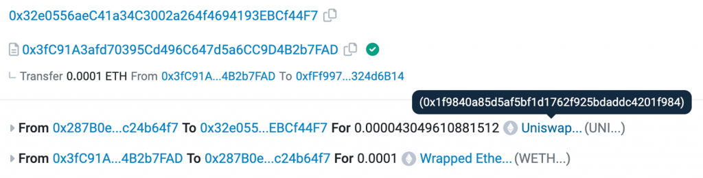
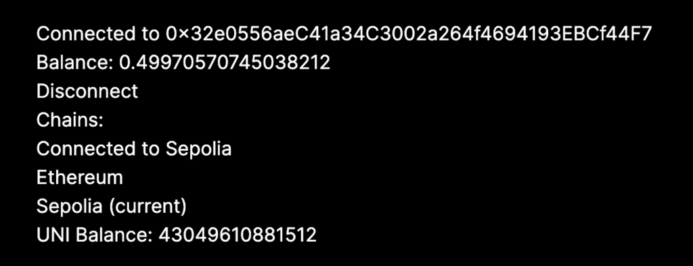
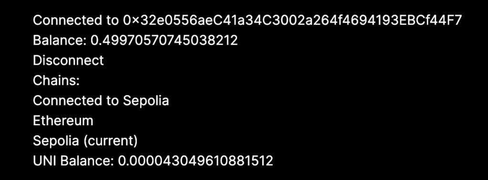
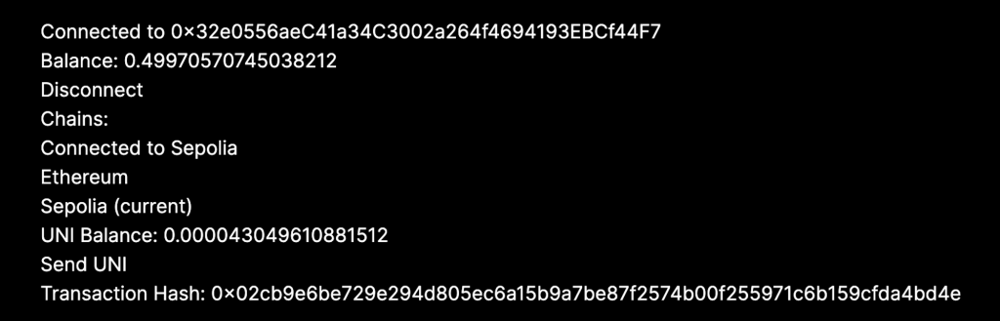
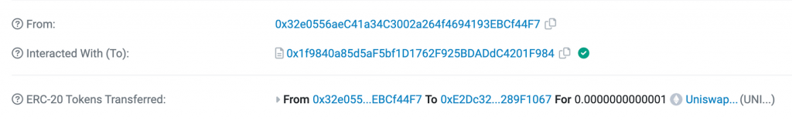
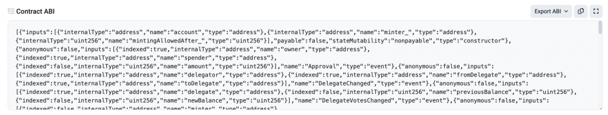

昨天我們的 DApp 已經有簡單的讀取功能，因此今天會開始實作較進階的讀取跟簡單的寫入的功能，也就是發送交易。例如錢包餘額現在可以顯示 ETH 的餘額，而在 Day 3 時已經透過測試鏈上的 Uniswap 獲得一些 UNI 幣，因此第一個目標是把這個幣的餘額顯示出來，再來就可以實際送出一個轉出 UNI 幣的交易到區塊鏈上。
UNI 幣本質上背後就是一個智能合約，可以先把智能合約理解成跑在區塊鏈上的程式。只是 UNI Token 的智能合約符合 ERC20 標準，這個標準是最廣泛被應用來實作代幣的標準（像以太坊上常見的 USDT, USDC, DAI, UNI 都是），這裡可以看到 ERC20 定義了什麼 function 以及相關細節：
[code] totalSupply() balanceOf(account) transfer(to, amount) allowance(owner, spender) approve(spender, amount) transferFrom(from, to, amount)
[/code]
今天我們不會細講太多關於 ERC20
以及智能合約的細節，不過可以大致猜到幾個 function 的作用：
totalSupply() 代表這個代幣的總發行量，
balanceOf(account) 可以拿到一個地址的代幣餘額，
transfer(to, amount) 可以指定要把我的代幣轉多少給誰。其他
function 今天還不會用到，有興趣的讀者可以先自行研究。
所以只要 UNI 的智能合約實作了這些 function，他就可以被稱為符合 ERC20 標準的智能合約，並且就支援一個代幣所需要的基本功能。讀到這邊大家可能也理解到了在以太坊上只有 ETH 是以太坊的「原生」代幣，其他代幣都是用智能合約實作出來的，透過把各個地址的代幣餘額紀錄在智能合約上，來模擬一個代幣的帳本。有些人會用 Coin 跟 Token 來區分這兩個概念，Coin 指的是這個區塊鏈原生的幣，Token 則指的是在這個鏈上透過智能合約模擬出來的幣，例如可以說 Polygon 這條鏈的 Coin （原生代幣）是 MATIC，而在 Polygon 鏈的 ETH 幣是 Token。
要取得當下地址的 UNI Token Balance，我們需要用到 wagmi 的
useContractRead hook，可以用來讀取任意智能合約中 view
function 的結果。所以首先需要用它來呼叫 balanceOf(account)
並帶入當下連接的錢包地址：
[code] import { useContractRead } from “wagmi”;
const UNI_CONTRACT_ADDRESS = "0x1f9840a85d5aF5bf1D1762F925BDADdC4201F984";
const NULL_ADDRESS = "0x0000000000000000000000000000000000000000";
// inside Profile()
const { data: balanceData } = useContractRead({
address: UNI_CONTRACT_ADDRESS,
abi: abi,
functionName: "balanceOf",
args: [address || NULL_ADDRESS],
});[/code]
其中 UNI_CONTRACT_ADDRESS 指的是 UNI
這個代幣背後的智能合約，找到他的方式是在上次執行的 Swap
交易中可以看到我收到的 UNI Token 數量，點進去就有他的合約地址了

可以看到我們透過 useContractRead 呼叫這個合約的
balanceOf function 並帶入 address
參數（如果尚未連接錢包就先給他一個 0x0 的地址字串），就可以拿到 balance
資料。其中還有一個參數是 abi，這裡就要介紹到 ABI
(Application Binary Interface)
的概念。簡單來說他就是任何人要跟智能合約互動時的介面定義，就像 RESTful
API 介面一樣，把這個介面的輸入跟輸出格式定義清楚，包含 function
name、參數及型別、回傳值等等。為了跟 UNI Token Contract 互動並呼叫他的
function，需要先定義跟他互動的介面，長得像這樣：
[code] const abi = [ { inputs: [ { internalType: “address”, name: “account”, type: “address”, }, ], name: “balanceOf”, outputs: [ { internalType: “uint256”, name: ““, type:”uint256”, }, ], stateMutability: “view”, type: “function”, }, ] as const;
[/code]
直接閱讀就能猜到大部分的意思，像是他定義清楚了 balanceOf
這個 function 的 input output 以及他是一個 view
function（不會改變智能合約的狀態）。後面加上 as const
是因為這樣才能讓 Typescript 幫我們做 Type inference，從傳入
useContractRead 的 functionName ,
abi自動推斷出 args 跟 return value
的型別。最後就可以把拿到的 balanceData 顯示出來
}
[/code]
結果如下：

上述的程式碼跑出來會看到 UNI Token Balance
是一個很大的數字，但其實我只有 0.000043 個 UNI
而已。這背後其實是因為智能合約上儲存的都是 Token Balance 乘上 10
的幾次方的結果，這就是為什麼 ABI 裡 balanceOf 定義的 output
類別才是 uint256而不是浮點數。這也跟以太坊當時設計 EVM
的考量有關，因為浮點數的計算常有精度誤差，這對極嚴格要求在所有電腦上都要有一致性的區塊鏈來說，原生支援浮點數計算會有比較高的風險。
至於要乘上 10 的幾次方，ERC20 合約也有一個 decimals()
function
可以用來查詢這個數值，方便大家把智能合約上讀出來的數字轉換成讓人類可以理解的數字，因此我們補上對應的
ABI 跟 contract read，就能算出最終要顯示的結果：
[code] import { formatUnits } from “viem”;
// abi definition
{
inputs: [],
name: "decimals",
outputs: [
{
internalType: "uint8",
name: "",
type: "uint8",
},
],
stateMutability: "view",
type: "function",
}
// inside Profile()
const { data: decimals } = useContractRead({
address: UNI_CONTRACT_ADDRESS,
abi: abi,
functionName: "decimals",
});
const uniBalance =
balanceData && decimals ? formatUnits(balanceData, decimals) : undefined;
// inside return
{uniBalance && <div>UNI Balance: {uniBalance}</div>}[/code]
很多代幣的 decimals 會是 18，因為以太坊原生的 ETH 最小單位也是 10^-18 ETH，也被稱為 wei。不過也有蠻多 decimals 是 6 的 token，所以每次都從鏈上查詢是最精準的。這樣就能顯示正確的餘額了！

再來是送出 Transfer UNI Token 的交易，會用到
useContractWrite hook 搭配智能合約上的
transfer(to, amount) function 達成。一樣先補上需要的 import
跟 ABI：
[code] import { useContractWrite } from “wagmi”;
// abi
{
inputs: [
{
internalType: "address",
name: "recipient",
type: "address",
},
{
internalType: "uint256",
name: "amount",
type: "uint256",
},
],
name: "transfer",
outputs: [
{
internalType: "bool",
name: "success",
type: "bool",
},
],
stateMutability: "nonpayable",
type: "function",
},[/code]
並從 useContractWrite 拿到需要的 write function
跟資料呈現在畫面上，其中第一個參數是要轉去的地址，可以在 Metamask
中再新增一個錢包地址來使用，第二個參數則是要轉出的數量（也就是在智能合約上紀錄的值，型別是
bigint
primitive）
[code] // inside Profile() const { data: txData, isLoading, isSuccess, write: sendUniTx, } = useContractWrite({ address: UNI_CONTRACT_ADDRESS, abi, functionName: “transfer”, args: [“0xE2Dc3214f7096a94077E71A3E218243E289F1067”, 100000n], });
// inside return
{uniBalance && (
<>
<div>UNI Balance: {uniBalance}</div>
<button onClick={() => sendUniTx()}>Send UNI</button>
{isLoading && <div>Check Your Wallet...</div>}
{isSuccess && <div>Transaction Hash: {txData?.hash}</div>}
</>
)}[/code]
實際跑起來點擊 Send UNI 後，就會跳出 Metamask 的視窗，確認後交易就成功送出了！畫面上會顯示對應的 Transaction Hash

再來就可以到 Sepolia Etherscan 上查看交易結果，在這個網址後面貼上 Tx
Hash 即可：https://sepolia.etherscan.io/tx/

交易成功上鏈後，重新整理畫面也可以看到顯示的 UNI Token Balance 已經有減少了。
這裡補充一些前面沒有提到的細節。首先是如何知道合約的 ABI 是什麼？這個其實可以到 Etherscan 的智能合約頁面，點 Contract tab 後往下拉就可以看到合約的完整 ABI。UNI 智能合約的網址在這裡

整份複製下來也可以，他就會包含所有這個合約定義的 function，只是今天的內容為了簡單就沒有把整份 ABI 複製出來。
再來如果有讀者實際把程式跑起來，可能會注意到按下 Send UNI 到跳出錢包中間會有一兩秒的延遲，而這是因為 wagmi 需要計算當下送出交易要用多少 gas fee、設定的 nonce 要是多少等等（未來會更深入講解）。為了提升使用體驗 wagmi 建議使用 usePrepareContractWrite hook 來預先抓好這些資料。詳細可以參考 wagmi prepare hooks 介紹跟這個 hook 的用法。
最後一個是如果在送出交易時馬上到 Sepolia Etherscan 上查看這筆 Tx Hash 的資料，可能會發現大概過了 10 秒到 30 秒左右這筆才會成功上鏈，因為從送出交易到上鏈中間需要經過礦工的驗證、按照手續費排序、打包進區塊等等，才能真正在區塊鏈上確認。為了呈現這個狀態 wagmi 也提供 useWaitForTransaction hook 來查詢一個 Tx Hash 的最新狀態，包含是否已確認、交易成功還是失敗等等。這樣才能知道何時要重拉 UNI Token Balance 資料，以在畫面上呈現最即時的餘額。
今天我們學到了更多關於智能合約的知識，以及和智能合約互動的方式，包含讀跟寫的操作，完整程式碼放在這裡。明天我們會介紹一個好用的 library 來大幅提升連接錢包的體驗，也就是 RainbowKit。